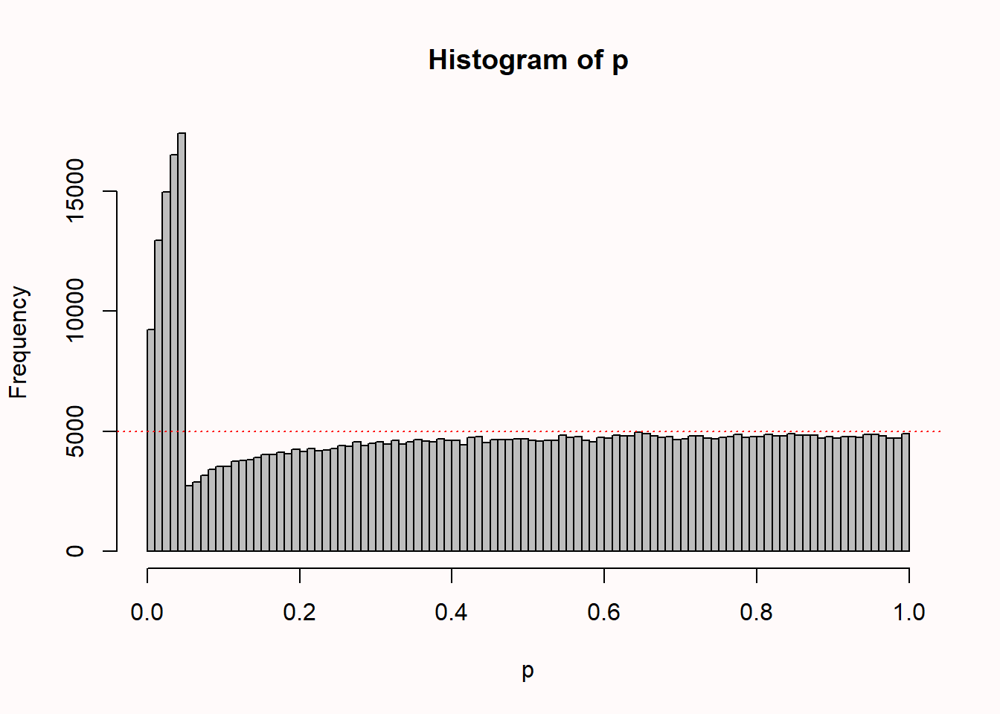

2 Error control
In the previous chapter on p-values we learned that in the Neyman-Pearson approach to hypothesis testing the goal is to make scientific claims while controlling how often you will make a fool of yourself in the long run. At the core of this frequentist approach to statistics lies the idea of error control: the desire to make scientific claims based on a methodological procedure that, when the assumptions are met, limits the percentage of incorrect claims to a desired maximum value. Frequentist statistics differs from Bayesian approaches to statistics, which focus on the probability of an event given some prior knowledge or personal belief. By focusing on long run probabilities, frequentist statistical approaches that rely on error control can not make statements about the probability that a hypothesis is true based on the data from a single study. As Neyman and Pearson (1933) write:
But we may look at the purpose of tests from another view-point. Without hoping to know whether each separate hypothesis is true or false, we may search for rules to govern our behaviour with regard to them, in following which we insure that, in the long run of experience, we shall not be too often wrong.
Researchers often do not control error rates when they make claims, and sometimes intentionally use flexibility in the data analysis to ‘p-hack’ or cherry-pick one out of many performed analyses that shows the results they wanted to see. From an error-statistical approach to statistical inferences, this is problematic behavior, as Mayo (2018) writes:
The problem with cherry picking, hunting for significance, and a host of biasing selection effects – the main source of handwringing behind the statistics crisis in science – is they wreak havoc with a method’s error probabilities. It becomes easy to arrive at findings that have not been severely tested.
2.1 Which outcome can you expect if you perform a study?
If you perform a study and plan to make a claim based on the statistical test you plan to perform, the long run probability of making a correct claim or an erroneous claim is determined by three factors, namely the Type 1 error rate, the Type 2 error rate, and the probability that the null hypothesis is true. There are four possible outcomes of a statistical test, depending on whether or not the result is statistically significant, and whether or not the null hypothesis is true.
False Positive (FP): Concluding there is a true effect, when there is a no true effect (\(H_0\) is true). This is also referred to as a Type 1 error, and indicated by \(\alpha\).
False Negative (FN): Concluding there is a no true effect, when there is a true effect (\(H_1\) is true). This is also referred to as a Type 2 error, and indicated by \(\beta\).
True Negative (TN): Concluding there is no true effect, when there is indeed no true effect (\(H_0\) is true). This is the complement of a False Positive, and is thus indicated by 1 - \(\alpha\).
True Positive (TP): Concluding there is a true effect, when there is indeed a true effect (\(H_1\) is true). This is the complement of a False Negative, and is thus indicated by 1 - \(\beta\).
The probability of observing a true positive when there is a true effect is, in the long run, equal to the statistical power of your study. The probability of observing a false positive when the null hypothesis is true is, in the long run, equal to the alpha level you have set, or the Type 1 error rate.
So, for the next study you will perform, which of the four possible outcomes is most likely? First, let’s assume you have set the alpha level to 5%. Furthermore, let’s assume you have designed a study so that it will have 80% power (and for this example, let’s assume that Omniscient Jones knows you indeed have exactly 80% power). The last thing to specify is the probability that the null hypothesis is true. Let’s assume for this next study you have no idea if the null hypothesis is true or not, and that it is equally likely that the null hypothesis is true, or the alternative hypothesis is true (both have a probability of 50%). We can now calculate what the most likely outcome of such a study is.
Before we perform this calculation, take a moment to think if you know the answer. You might have designed studies with a 5% alpha level and 80% power, where you believed it was equally likely that \(H_0\) or \(H_1\) was true. Surely, it is useful to have reasonable expectations about which result to expect, when we perform such a study? Yet in my experience, many researchers perform without thinking about these probabilities at all. They often hope to observe a true positive, even when in the situation described above, the most likely outcome is a true negative. Let’s now calculate these probabilities.
Let’s assume we perform 200 studies with a 5% alpha level, 80% power, and a 50% probability that \(H_0\) is true. How many false positives, true positives, false negatives, and true negatives should we expect in the long run?
| \(H_0\) True (50%) | \(H_1\) True (50%) | |
|---|---|---|
| Significant Finding (Positive result) \(\alpha\) = 5%, 1-\(\beta\) = 80% | False Positive 5% \(\times\) 50% = 2.5% (5 studies) | True Positive 80% \(\times\) 50% = 40% (80 studies) |
| Non-Significant Finding (Negative result) 1-\(\alpha\) = 95%, \(\beta\) = 20% | True Negative 95% \(\times\) 50% = 47.5% (95 studies) | False Negative 20% \(\times\) 50% = 10% (20 studies) |
In the table above we see that 2.5% of all studies will be a false positive (a 5% Type 1 error rate, multiplied by a 50% probability that \(H_0\) is true). 40% of all studies will be a true positive (80% power multiplied by a 50% probability that \(H_1\) is true). The probability of a false negative is 10% (a 20% Type 2 error rate multiplied by a 50% probability that \(H_1\) is true). The most likely outcome is a true negative, with 47.5% (a 95% probability observing a non-significant result, multiplied by a 50% probability that \(H_0\) is true). You can check that these percentages sum to 100, so we have covered all of the possibilities.
It might be that you are not too enthusiastic about this outlook, and you would like to perform studies that have a higher probability of observing a true positive. What should you do? We can reduce the alpha level, increase the power, or increase the probability that \(H_1\) is true. As the probability of observing a true positive depends on the power, multiplied by the probability that \(H_1\) is true, we should design studies where both of these values are high. Statistical power can be increased by changes in the design of the study (e.g., by increasing the sample size). The probability that \(H_1\) is true depends on the hypothesis you are testing. If the probability that \(H_1\) is true is very high from the outset, you are at the risk of testing a hypothesis that is already established with enough certainty. A solution, which might not happen that often in your career, is to come up with the test of a hypothesis that is not trivial, but that which, when you explain it to your peers, makes a lot of sense to them. In other words, they would not have come up with the idea themselves, but after explaining it to them, they think it is extremely plausible. Such creative research ideas will most likely be very rare in your academic career, if you ever have any at all. Not all research needs to be this ground-breaking. It is also extremely valuable to perform replication and extension studies where it is relatively likely that \(H_1\) is true, but the scientific community still benefits from knowing that findings generalize to different circumstances.
2.2 Positive predictive value
John Ioannidis wrote a well known article titled “Why Most Published Research Findings Are False” (Ioannidis, 2005). At the same time, we have learned that if you set your alpha at 5%, the Type 1 error rate will not be higher than 5% (in the long run). How are these two statements related? Why aren’t 95% of published research findings true? The key to understanding this difference is that two different probabilities are calculated. The Type 1 error rate is the probability of saying there is an effect, when there is no effect. Ioannidis calculates the positive predictive value (PPV), which is the conditional probability that if a study turns out to show a statistically significant result, there is actually a true effect. This probability is useful to understand, because people often selectively focus on significant results, and because due to publication bias, in some research areas only significant results are published.
A real-life example where it is useful to understand the concept of the positive predictive value concerns the number of vaccinated and unvaccinated people admitted to hospital with COVID-19 symptoms. In some places, official statistics showed that 50% of people who were hospitalized with COVID-19 were vaccinated. If you do not understand the concept of a positive predictive value, you might believe this reveals that you are equally likely to end up in the hospital, whether you are vaccinated or not. This is incorrect. As Figure 2.2 nicely visualizes, the probability that a person is vaccinated is very high, and the probability that a vaccinated person ends up in the hospital is much lower than the probability that an unvaccinated person ends up in the hospital. However, if we select only those individuals who end up in the hospital, we are computing a probability conditional on being in the hospital.

It is useful to understand what the probability is that, if you have observed a significant result in an experiment, the result is actually a true positive. In other words, in the long run, how many true positives can we expect, among all positive results (both true positives and false positives)? This is known as the Positive Predictive Value (PPV). We can also calculate how many false positives we can expect, among all positive results (again, both true positives and false positives). This is known as the False Positive Report Probability (Wacholder et al., 2004), sometimes also referred to as the False Positive Risk (Colquhoun, 2019).
\[PPV = \frac{\text{True}\ \text{Positives}}{(\text{True}\ \text{Positives} + \text{False}\ \text{Positives})}\]
\[FPRP = \frac{\text{False}\ \text{Positives}}{(\text{True}\ \text{Positives} + \text{False}\ \text{Positives})}\]
The PPV and FPRP combine classic Frequentist concepts of statistical power and alpha levels with prior probabilities that \(H_0\) and \(H_1\) are true. They depend on the proportion of studies that you run where there is an effect (\(H_1\) is true), and where there is no effect (\(H_0\) is true), in addition to the statistical power, and the alpha level. After all, you can only observe a false positive if the null hypothesis is true, and you can only observe a true positive if the alternative hypothesis is true. Whenever you perform a study, you are either operating in a reality where there is a true effect, or you are operating in a reality where there is no effect – but you don’t know in which reality you are.
When you perform studies, you will be aware of all outcomes of your studies (both the significant and the non-significant findings). In contrast, when you read the literature, there is publication bias, and you often only have access to significant results. This is when thinking about the PPV (and the FPRP) becomes important. If we set the alpha level to 5%, in the long run 5% of studies where \(H_0\) is true (FP + TN) will be significant. But in a literature with only significant results, we do not have access to all of the true negatives, and so it is possible that the proportion of false positives in the literature is much larger than 5%.
If we continue the example above, we see there are 85 positive results (80 + 5) in the 200 studies. The false positive report probability is 5/85 = 0.0588. At the same time, the alpha level of 5% guarantees that (in the long run) 5% of the 100 studies where the null hypothesis is true will be Type 1 errors: 5% × 100 = 5. When we do 200 studies, at most 5% × 200 = 10 could possibly be false positives (if \(H_0\) was true in all experiments). In the 200 studies we performed (and where \(H_0\) was true in only 50% of the studies), the proportion of false positives for all experiments is only 2.5%. Thus, for all experiments you do, the proportion of false positives will, in the long run, never be higher than the Type I error rate set by the researcher (e.g., 5% when \(H_0\) is true in all experiments), but it can be lower (when \(H_0\) is true in less than 100% of the experiments).

(Note: FDR and FPRP are different abbreviations for the same thing.)
People often say something like: “Well, we all know 1 in 20 results in the published literature are Type 1 errors”. You should be able to understand this is not true in practice, after learning about the positive predictive value. When in 100% of the studies you perform, the null hypothesis is true, and all studies are published, only then are 1 in 20 studies, in the long run, false positives (and the rest correctly reveal no statistically significant difference). It also explains why the common p-value misconception “If you have observed a significant finding, the probability that you have made a Type 1 error (a false positive) is 5%.” is not correct, because in practice the null hypothesis is not true in all tests that are performed (sometimes the alternative hypothesis is true). Importantly, as long as there is publication bias (where findings with desired results end up in the scientific literature, and for example non-significant results are not shared) then even if researchers use a 5% alpha level, it is quite reasonable to assume much more than 5% of significant findings in the published literature are false positives. In the scientific literature, the false positive report probability can be quite high, and under specific circumstances, it might even be so high that most published research findings are false. This will happen when researchers examine mostly studies where 1) the null hypothesis is true, 2) with low power, or 3) when the Type 1 error rate is inflated due to p-hacking or other types of bias.
2.3 Type 1 error inflation

If you perform multiple comparisons, there is a risk that the Type 1 error rate may become inflated. When multiple comparisons are planned, in some cases it is possible to control the Type 1 error rate by lowering the alpha level for each individual analysis. The most widely known approach to control for multiple comparisons is the Bonferroni correction, where the alpha level is divided by the number of tests that is performed. However, researchers also often use informal data analysis strategies that inflate the Type 1 error rate. Babbage (1830) already complained about these problematic practices in 1830, and two centuries later, they are still common. Barber (1976) provides an in-depth discussion of a range of approaches, such as eyeballing the data to decide which hypotheses to test (sometimes called “double dipping”); selectively reporting only those analyses that confirm predictions and ignoring non-significant results, collecting many variables and performing multitudes of tests, or performing sub-group analyses when the planned analysis yields nonsignificant results; or after a nonsignificant prediction, deriving a new hypothesis that is supported by the data, and testing the hypothesis on the data that the hypothesis was derived from (sometimes called HARKing, Hypothesizing After Results are Known (Kerr, 1998)). Many researchers admit to having used practices that inflate error rates (see section about questionable research practices in Chapter 15 on research integrity). I myself have used such practices in the first scientific article I published, before I was fully aware of how problematic this was - for an article that my co-authors and I published several years later in which we reflect on this, see Jostmann et al. (2016).
For some paradigms, researchers have a lot of flexibility in how to compute the main dependent variable. Elson and colleagues examined 130 publications that used the Competitive Reaction Time Task, in which participants select the duration and intensity of blasts of an unpleasent noise to be delivered to a competitor (Elson et al., 2014). The task is used to measure ‘aggressive behavior’ in an ethical manner. To compute the score, researchers can use the duration of a noise blast, the intensity, or a combination thereof, averaged over any number of trials, with several possible transformations of the data. The 130 publications that were examined reported 157 different quantification strategies in total, showing that most calculations of the dependent variable were unique, used only in a single article. One might wonder why the same authors sometimes used different computations across articles. One possible explanation is that they used this flexibility in the data analysis to find statistically significant results.

2.4 Optional stopping

One practice that inflates the Type 1 error rate is known as optional stopping. In optional stopping a researcher repeatedly analyzes the data, continues the data collection when the test result is not statistically significant, but stops when a significant effect is observed. The quote from a published article in Figure 2.6 is an example where researchers transparently report they used optional stopping, but more commonly people do not disclose the use of optional stopping in their methods sections. In recent years, many researchers have learned that optional stopping is problematic. This has led some to the general idea that you should never collect data, look at whether the results are significant, and stop data collection when the result is significant, or if not, continue data collection. That is not the correct conclusion, and is an example of becoming too inflexible. The correct approach — to collect data in batches, called sequential analysis — has been extensively developed by statisticians, and is used in many medical trials. We discuss sequential analyses in Chapter 10. The main lesson is that certain research practices can increase the flexibility and efficiency of studies you perform, when done right, but the same practices can inflate the Type 1 error rate when done wrong. Let’s therefore try to get a better understanding of when and how we risk inflating our Type 1 error rate with optional stopping, and how to do this correctly using sequential analysis.
Copy the code below into R and run it. This script will simulate an ongoing data collection. After 10 participants in each condition, a p-value is calculated by performing an independent t-test, and this t-test is then repeated after every additional participant that is collected. Then, all these p-values are plotted as a function of the increasing sample size.
n <- 200 # total number of datapoints (per condition) after initial 10
d <- 0.0 # effect size d
p <- numeric(n) # store p-values
x <- numeric(n) # store x-values
y <- numeric(n) # store y-values
n <- n + 10 # add 10 to number of datapoints
for (i in 10:n) { # for each simulated participants after the first 10
x[i] <- rnorm(n = 1, mean = 0, sd = 1)
y[i] <- rnorm(n = 1, mean = d, sd = 1)
p[i] <- t.test(x[1:i], y[1:i], var.equal = TRUE)$p.value
}
p <- p[10:n] # Remove first 10 empty p-values
# Create the plot
par(bg = "#fffafa")
plot(0, col = "red", lty = 1, lwd = 3, ylim = c(0, 1), xlim = c(10, n),
type = "l", xlab = "sample size", ylab = "p-value")
lines(p, lwd = 2)
abline(h = 0.05, col = "darkgrey", lty = 2, lwd = 2) # draw line at p = 0.05
min(p) # Return lowest p-value from all looks
cat("The lowest p-value was observed at sample size", which.min(p) + 10)
cat("The p-value dropped below 0.05 for the first time at sample size:",
ifelse(is.na(which(p < 0.05)[1] + 10), "NEVER", which(p < 0.05)[1] + 10)) For example, in Figure 2.7 you see the p-value plotted on the y-axis (from 0 to 1) and the sample size plotted on the x-axis (from 0 to 200). For this simulation, the true effect size was d = 0, meaning there is no true effect. We can thus only observe true negatives or false positives. As the sample size increases, the p-value slowly moves up and down (remember from the Chapter 1 on p-values that when there is no true effect, p-values are uniformly distributed). In Figure 2.7 the p-value drops below the grey line (indicating an alpha level 0.05) after collecting 83 participants in each condition, only to drift back upwards to larger p-values. From this figure, it becomes clear that the more often we look at the data, and the larger the total sample size, the higher the probability that one of the analyses will yield a p < \(\alpha\). If resources are infinite, the Type 1 error rate will be 1, and a researcher can always find a significant result through optional stopping.

When there is a true effect, we see that p-values also vary, but they will eventually drop below the alpha level. We just do not know exactly when this will happen due to sampling error. When we perform an a-priori power analysis, we can compute the probability that looking at a specific sample size will yield a significant p-value. In Figure 2.8 we see the same simulation, but now when there is a true but small effect of d = 0.3. With 200 observations per condition, a sensitivity power analysis reveals that we have 85% power. If we were to analyze the data at an interim analysis (e.g., after 150 observations) we would often already find a statistically significant effect (as we would have 74% power). This illustrates a benefit of sequential analyses, where we control error rates, but can stop early at an interim analysis. Sequential analyses are especially useful in large or expensive studies where there is uncertainty about the true effect size.

Let’s more formally examine the inflation of the Type 1 error rate through optional stopping in a simulation study. Copy the code below into R and run the code. Note that the 50000 simulations (needed to get the error rates reasonably accurate) take some time to run.
N <- 100 # total datapoints (per condition)
looks <- 5 # set number of looks at the data
nsims <- 50000 # number of simulated studies
alphalevel <- 0.05 # set alphalevel
if(looks > 1){
look_at_n <- ceiling(seq(N / looks, N, (N - (N / looks)) / (looks - 1)))
} else {
look_at_n <- N
}
look_at_n <- look_at_n[look_at_n > 2] # Remove looks at N of 1 or 2
looks<-length(look_at_n) # if looks are removed, update number of looks
matp <- matrix(NA, nrow = nsims, ncol = looks) # Matrix for p-values l tests
p <- numeric(nsims) # Variable to save pvalues
# Loop data generation for each study, then loop to perform a test for each N
for (i in 1:nsims) {
x <- rnorm(n = N, mean = 0, sd = 1)
y <- rnorm(n = N, mean = 0, sd = 1)
for (j in 1:looks) {
matp[i, j] <- t.test(x[1:look_at_n[j]], y[1:look_at_n[j]],
var.equal = TRUE)$p.value # perform the t-test, store
}
cat("Loop", i, "of", nsims, "\n")
}
# Save Type 1 error rate smallest p at all looks
for (i in 1:nsims) {
p[i] <- ifelse(length(matp[i,which(matp[i,] < alphalevel)]) == 0,
matp[i,looks], matp[i,which(matp[i,] < alphalevel)])
}
hist(p, breaks = 100, col = "grey") # create plot
abline(h = nsims / 100, col = "red", lty = 3)
cat("Type 1 error rates for look 1 to", looks, ":",
colSums(matp < alphalevel) / nsims)
cat("Type 1 error rate when only the lowest p-value for all looks is reported:",
sum(p < alphalevel) / nsims)This simulation will perform multiple independent t-tests on simulated data, looking multiple times until the maximum sample size is reached. In the first four lines, you can set the most important parameters of the simulation. First, the maximum sample size in each condition (e.g., 100). Then, the number of looks (e.g., 5). At best, you can look at the data after every participant (e.g., with 100 participants, you can look 100 times – or actually 98 times, because you need more than 2 participants in each condition for a t-test!). You can set the number of simulations (the more, the clearer the pattern will be, but the longer the simulation takes), and the alpha level (e.g., 0.05). Since you can only make a Type 1 error when there is no true effect, the effect size is set to 0 in these simulations.
When you perform only a single test, the Type 1 error rate is the probability of finding a p-value lower than your alpha level, when there is no effect. In an optional stopping scenario where you look at the data twice, the Type 1 error rate is the probability of finding a p-value lower than your alpha level at the first look, plus the probability of not finding a p-value lower than your alpha level at the first look, but finding a p-value lower than your alpha level at the second look. This is a conditional probability, which makes error control a little bit more complex than when multiple looks are completely independent.
So how much does optional stopping inflate the Type 1 error rate? And which p-values can we expect under optional stopping?
Start by running the simulation without changing any values, so simulating 100 participants in each condition, looking 5 times at your data, with an alpha of 0.05. Note the 50.000 simulations take a while! You should see something similar to Figure 2.9 below (which is based on 500.000 simulations to make the pattern very clear).

We see 100 bars, one for each percentile (so one for all p-values between 0.00 and 0.01, one for p-values between 0.01 and 0.02, etc.). There is a horizontal line that indicates where all p-values would fall, if they were uniformly distributed (as they should be when there is no true effect, as explained in Chapter 1 on p-values).
The distribution of p-values is peculiar. We see that compared to a uniform distributions, a bunch of results just above the alpha threshold of 0.05 are missing, and they seem to have been pulled just below 0.05, where there is a much higher frequency of outcomes compared to when data is not analyzed multiple times as it comes in. Notice how relatively high p-values (e.g., p = 0.04) are more common than lower p-values (e.g., 0.01). We will see in Chapter 12 on bias detection that statistical techniques such as p-curve analysis can pick up on this pattern.
When using an alpha level of 5% with 5 looks at the data, the overall Type 1 error rate has inflated to 14%. If we lower the alpha level at each interim analysis, the overall Type 1 error rate can be controlled. The shape of the p-value distribution will still look peculiar, but the total number of significant test results will be controlled at the desired alpha level. The well-known Bonferroni correction (i.e., controlling the Type 1 error rate by setting the alpha level to \(\alpha\) divided by the number of looks), but the Pocock correction is slightly more efficient. For more information on how to perform interim analyses while controlling error rates, see Chapter 10 on sequential analysis.
2.5 Justifying Error Rates
If we reject \(H_0\) , we may reject it when it is true; if we accept \(H_0\) , we may be accepting it when it is false, that is to say, when really some alternative \(H_t\) is true. These two sources of error can rarely be eliminated completely; in some cases it will be more important to avoid the first, in others the second. We are reminded of the old problem considered by Laplace of the number of votes in a court of judges that should be needed to convict a prisoner. Is it more serious to convict an innocent man or to acquit a guilty? That will depend upon the consequences of the error; whether the punishment is death or a fine; what the danger is to the community of released criminals; and what are the current ethical views on punishment. From the point of view of mathematical theory, all that we can do is to show how the risk of the errors may be controlled and minimised. The use of these statistical tools in any given case, in determining just how the balance should be struck, must be left to the investigator.
Even though in theory the Type 1 and Type 2 error rate should be justified by the researcher (as Neyman and Pearson (1933) write above), in practice researchers tend to imitate others. The default use of an alpha level of 0.05 can already be found in the work by Gosset on the t-distribution (Cowles & Davis, 1982; Kennedy-Shaffer, 2019), who believed that a difference of two standard errors (a z-score of 2) was sufficiently rare. The default use of 80% power (or a 20% Type 2 error rate) is similarly based on personal preferences by Cohen (1988), who writes:
It is proposed here as a convention that, when the investigator has no other basis for setting the desired power value, the value .80 be used. This means that beta is set at .20. This value is offered for several reasons (Cohen, 1965, pp. 98-99). The chief among them takes into consideration the implicit convention for alpha of .05. The beta of .20 is chosen with the idea that the general relative seriousness of these two kinds of errors is of the order of .20/.05, i.e., that Type I errors are of the order of four times as serious as Type II errors. This .80 desired power convention is offered with the hope that it will be ignored whenever an investigator can find a basis in his substantive concerns about his specific research investigation to choose a value ad hoc.
We see that conventions are built on conventions: the norm to aim for 80% power is built on the norm to set the alpha level at 5%. Although there is nothing special about an alpha level of 5%, it is interesting to reflect on why it has become so widely established. Irwin Bross (1971) argues the use of an alpha level is functional and efficient when seen as an aspect of communication networks among scientists, and writes “Thus the specification of the critical levels […] has proved in practice to be an effective method for controlling the noise in communication networks.” Bross believes the 0.05 threshold is somewhat, but not completely arbitrary, and asks us to imagine what would have happened had an alpha level of 0.001 been proposed, or an alpha level of 0.20. In both cases, he believes the convention would not have spread – in the first case because in many fields there are not sufficient resources to make claims at such a low error rate, and in the second case because few researchers would have found that alpha level a satisfactory quantification of ‘rare’ events. Uygun Tunç et al. (2023) argue that one possible reason is that, as far as conventions go, an alpha level of 5% might be low enough that peers take any claims made with this error rate seriously, while at the same time being high enough that peers will be motivated to perform an independent replication study to increase or decrease our confidence in the claim. Although lower error rates would establish claims more convincingly, this would also require more resources. One might speculate that in research areas where not every claim is important enough to warrant a careful justification of costs and benefits, 5% has a pragmatic function in facilitating conjectures and refutations in fields that otherwise lack a coordinated approach to knowledge generation, but are faced with limited resources.
Nevertheless, some researchers have proposed to move away from the default use of a 5% alpha level. For example, Johnson (2013) proposes a default significance level of 0.005 or 0.001. Others have cautioned against such blanket recommendation because the additional resources required to reduce the Type 1 error rate might not be worth the costs (Lakens et al., 2018). A lower alpha level requires a larger sample size to achieve the same statistical power. If the sample size cannot be increased, a lower alpha level reduces the statistical power, and increases the Type 2 error rate. Whether that is desirable should be evaluated on a case by case basis.
There are two main reasons to abandon the universal use of a 5% alpha level. The first is that decision-making becomes more efficient (Gannon et al., 2019; Mudge et al., 2012). If researchers use hypothesis tests to make dichotomous decisions from a methodological falsificationist approach to statistical inferences, and have a certain maximum sample size they are willing or able to collect, it is typically possible to make decisions more efficiently by choosing error rates such that the combined cost of Type 1 and Type 2 errors is minimized. If we aim to either minimize or balance Type 1 and Type 2 error rates for a given sample size and effect size, the alpha level should be set not based on convention, but by weighting the relative cost of both types of errors (Maier & Lakens, 2022).
Warning in ggplot2::geom_point(ggplot2::aes(x = res$minimum, y = (costT1T2 * : All aesthetics have length 1, but the data has 9999 rows.
ℹ Please consider using `annotate()` or provide this layer with data containing
a single row.For example, imagine a researcher plans to collect 64 participants per condition to detect a d = 0.5 effect, and weighs the cost of Type 1 errors 4 times as much as Type 2 errors. This is exactly the scenario Cohen (1988) described, and with 64 participants per condition the relative weight of Type 1 and Type 2 errors yields a 5% Type 1 error rate and a 20% Type 2 error rate. Now imagine that this researcher realizes they have the resources to collect 80 observations instead of just 64. With an interest in an effect size of d = 0.5, the relative weight of Type 1 and Type 2 errors of 4 (a as suggested by Cohen) would be satisfied if they were to set the alpha level to 0.037, as the Type 2 error rate would be 0.147. Alternatively, the researcher might have decided to collect 64 observations, but rather than balance the error rates, instead set the alpha level such that the weighted combined error rate is minimized, which is achieved when the alpha level is set to 0.033, as visualized in Figure 2.10 (for further information, see Maier & Lakens (2022)).
Warning in ggplot2::geom_point(ggplot2::aes(x = res$minimum, y = (costT1T2 * : All aesthetics have length 1, but the data has 9999 rows.
ℹ Please consider using `annotate()` or provide this layer with data containing
a single row.
Justifying error rates can lead to situations where the alpha level is increased above 0.05, because this leads to better decision making. Winer (1962) writes:
The frequent use of the .05 and .01 levels of significance is a matter of convention having little scientific or logical basis. When the power of tests is likely to be low under these levels of significance, and when Type 1 and Type 2 errors are of approximately equal importance, the .30 and .20 levels of significance may be more appropriate than the .05 and .01 levels.
The reasoning here is that a design that has 70% power for the smallest effect size of interest would not balance the Type 1 and Type 2 error rates in a sensible manner. Of course, such an increase of the alpha level should only be deemed acceptable when authors can justify that the cost of the increase in the Type 1 error rate is sufficiently compensated by the benefit of the decreased Type 2 error rate. This will encompass cases where (1) the study will have practical implications that require decision making, (2) a cost-benefit analysis is provided that gives a clear rationale for the relatively high costs of a Type 2 error, (3) the probability that \(H_1\) is false is relatively low, and (4) it is not feasible to reduce overall error rates by collecting more data.
One should also carefully reflect on the choice of the alpha level when an experiment achieves very high statistical power for all effect sizes that are considered meaningful. If a study has 99% power for effect sizes of interest, and thus a 1% Type 2 error rate, but uses the default 5% alpha level, it also suffers from a lack of balance, and the use of a lower alpha level would lead to a more balanced decision, and increase the severity of the test.
The second reason for making a study-specific choice of alpha level is most relevant for large data sets, and is related to Lindley’s paradox. As the statistical power increases, some p-values below 0.05 (e.g., p = 0.04) can be more likely when there is no effect than when there is an effect. To prevent situations where a frequentist rejects the null hypothesis based on p < 0.05, when the evidence in the test favors the null hypothesis over the alternative hypothesis, it is recommended to lower the alpha level as a function of the sample size. The need to do so is discussed by Leamer (1978), who writes “The rule of thumb quite popular now, that is, setting the significance level arbitrarily to .05, is shown to be deficient in the sense that from every reasonable viewpoint the significance level should be a decreasing function of sample size.” The idea of this approach is to reduce the alpha level such that a Bayes factor or likelihood computed for a significant result would never be evidence for the null hypothesis (for an online Shiny app to perform such calculations, see here.
2.6 Why you don’t need to adjust your alpha level for all tests you’ll do in your lifetime.
Some researchers criticize corrections for multiple comparisons because one might as well correct for all of the tests you will do in your lifetime (Perneger, 1998). If you choose to use a Neyman-Pearson approach to statistics the only reason to correct for all tests you perform in your lifetime is when all the work you have done in your life tests a single theory, and you would use your last words to decide to accept or reject this theory, as long as only one of all individual tests you have performed yielded a p < \(\alpha\). Researchers rarely work like this.
Instead, in a Neyman-Pearson approach to hypothesis testing, the goal is to use data to make decisions about how to act. Neyman (1957) calls his approach inductive behavior. The outcome of an experiment leads one to take different possible actions, which can be either practical (e.g., implement a new procedure, abandon a research line) or scientific (e.g., claim there is or is not an effect). From an error-statistical approach (Mayo, 2018), inflated Type 1 error rates mean that it has become very likely that you will be able to claim support for your hypothesis, even when the hypothesis is wrong. This reduces the severity of the test. To prevent this, we need to control our error rate at the level of our claim.
A useful distinction in the literature on multiple testing is a union-intersection testing approach, and an intersection-union testing approach (Dmitrienko & D’Agostino Sr, 2013). In a union-intersection approach, a claim is made when at-least-one test is significant. In these cases, a correction for multiple comparisons is required to control the error rate. In an intersection-union approach, a claim is made when all performed tests are statistically significant, and no correction for multiple comparisons is required (indeed, under some assumptions researchers could even increase the alpha level in a intersection-union approach).
Let’s assume we collect data from 100 participants in a control and treatment condition. We collect 3 dependent variables (dv1, dv2, and dv3). In the population there is no difference between groups on any of these three variables (the true effect size is 0). We will analyze the three dv’s in independent t-tests. This requires specifying our alpha level, and thus deciding whether we need to correct for multiple comparisons. For some reason I do not fully understand, several researchers believe it is difficult to decide when you need to correct for multiple comparisons. As Bretz, Hothorn, & Westfall (2011) write in their excellent book “Multiple Comparisons Using R”: “The appropriate choice of null hypotheses being of primary interest is a controversial question. That is, it is not always clear which set of hypotheses should constitute the family H1,…,Hm. This topic has often been in dispute and there is no general consensus.” In one of the best papers on controlling for multiple comparisons out there, Bender & Lange (2001) write: “Unfortunately, there is no simple and unique answer to when it is appropriate to control which error rate. Different persons may have different but nevertheless reasonable opinions. In addition to the problem of deciding which error rate should be under control, it has to be defined first which tests of a study belong to one experiment.”
I have never understood this confusion, at least not when working within a Neyman-Pearson approach to hypothesis testing, where the goal is to control error rates at the level of a statistical claim. How we control error rates depends on the claim(s) we want to make. We might want to act as if (or claim that) our treatment works if there is a difference between the treatment and control conditions on any of the three variables. This means we consider the prediction corroborated when the p-value of the first t-test is smaller than alpha level, the p-value of the second t-test is smaller than the alpha level, or the p-value of the third t-test is smaller than the alpha level. This falls under the union-intersection approach, and a researcher should correct the alpha level for multiple comparisons.
We could also want to make three different predictions. Instead of one hypothesis (“something will happen”) we have three different hypotheses, and predict there will be an effect on dv1, dv2, and dv3. Each of these claims can be corroborated, or not. As these are three tests, that inform three claims, there are no multiple comparisons, and no correction for the alpha level is required.
It might seem that researchers can get out of Performing corrections for multiple comparisons by formulating a hypothesis for every possible test they will perform. Indeed, they can. For a 10 correlation matrix, a researcher might state they are testing 45 unique predictions, each at an uncorrected alpha level. However, readers might reasonably question whether these 45 tests were all predicted by a sensible theory, or if the author is just making up predictions in order to not have to correct the alpha level. Distinguishing between these two scenarios is not a statistical question, but a theoretical question. If only a few of the 45 tests corroborate the prediction, the meager track record of the predictions should make readers doubt whether the body of work that was used to derive the predictions has anything going for it.
There are different ways to control for error rates, the easiest being the Bonferroni correction and the ever-so-slightly less conservative Holm-Bonferroni sequential procedure. When the number of statistical tests becomes substantial, it is sometimes preferable to control what is known as the false discovery rate (or the expected proportion of false discoveries), instead of the false positive error rate (Benjamini & Hochberg, 1995).
2.7 Power Analysis
So far we have largely focused on Type 1 error control. As was clear from Figure 2.8, when there is a true effect p-values will eventually become smaller than any given alpha level as the sample size becomes large enough. When designing an experiment, one goal might be to choose a sample size that provides a desired Type 2 error rate for an effect size of interest. This can be achieved by performing an a-priori power analysis. The statistical power of a test (and, hence, the Type 2 error rate) depends on the standardized effect size (or the raw effect size and the standard deviation), the sample size, and the alpha level. All else equal, the larger the effect size, the sample size, and alpha level, the higher the statistical power, and the smaller the effect size, sample size, and alpha level, the lower the statistical power.
It is important to highlight that the goal of an a-priori power analysis is not to achieve sufficient power for the true effect size. The true effect size is always unknown when designing a study. The goal of an a-priori power analysis is to achieve sufficient power, given a specific assumption of the effect size a researcher wants to detect. Just as a Type I error rate is the maximum probability of making a Type I error conditional on the assumption that the null hypothesis is true, an a-priori power analysis is computed under the assumption of a specific effect size. It is unknown if this assumption is correct. All a researcher can do is to make sure their assumptions are well justified. Statistical inferences based on a test where the Type II error is controlled are conditional on the assumption of a specific effect size. They allow the inference that, assuming the true effect size is at least as large as that used in the a-priori power analysis, the maximum Type II error rate in a study is not larger than a desired value.
In Figure 2.11 we see the expected distribution of observed standardized effect sizes (Cohen’s d) for an independent t-test with 50 observations in each condition. The bell-shaped curve on the left represents the expectations if the null is true, and the red areas in the tail represent Type 1 errors. The bell-shaped curve on the right represents the expectations if the alternative hypothesis is true, and an effect size of d = 0.5. The vertical line at d = 0.4 represents the critical effect size. With this sample size and an alpha level of 0.05, observed effect sizes smaller than d = 0.4 will not be statistically significant. The critical effect size is independent of the true effect size (you can change d = 0.5 to any other value). If there is a true effect, these outcomes will be Type 2 errors, illustrated by the blue shaded area. The remainder of the curve reflects true positives, when there is a true effect, and the observed effect sizes are statistically significant. The power of the test is the proportion of the distribution on the right that is larger than the critical value.

The issue of Type 2 error control will be discussed in more detail in Chapter 8 on sample size justification. Even though the topic of Type 2 error control is only briefly discussed here, it is at least as important as Type 1 error control. An informative study should have a high probability of observing an effect if there is an effect. Indeed, the default recommendation to aim for 80% power leaves a surprisingly large (20%) probability of a Type 2 error. If a researcher only cares about not making a decision error, but the researcher does not care about whether this decision error is a false positive or a false negative, an argument could be made that Type 1 and Type 2 errors are weighed equally. Therefore, desiging a study with balanced error rates (e.g., a 5% Type 1 error rate and 95% power) would make sense.
2.8 Test Yourself
2.8.1 Questions about the positive predictive value
Q1: In the example at the start of this chapter, we saw that we can control the Type 1 error rate at 5% by using an alpha of 0.05. Still, when there is a 50% probability that \(H_0\) is true, the proportion of false positives for all experiments performed turns out to be much lower, namely 2.5%, or 0.025. Why?
Q2: What will make the biggest difference in improving the probability that you will find a true positive? Check your answer by shifting the sliders in the online PPV app at http://shinyapps.org/apps/PPV/ or https://shiny.ieis.tue.nl/PPV/
Increasing the power requires bigger sample sizes, or studying larger effects. Increasing the % of a-priori true hypotheses can be done by making better predictions – for example building on reliable findings, and relying on strong theories. These are useful recommendations if you want to increase the probability of performing studies where you find a statistically significant result.
Q3: Set the “% of a priori true hypotheses” slider to 50%. Leave the ‘\(\alpha\) level’ slider at 5%. Leave the ‘% of p-hacked studies’ slider at 0. The title of Ioannidis’ paper is ‘Why most published research findings are false’. One reason might be that studies often have low power. At which value for power is the PPV 50%? In other words, at which level of power is a significant result just as likely to be true, as that it is false?
It seems that low power alone is not the best explanation for why most published findings might be false, as it is unlikely that power is low enough in the scientific literature. Ioannidis (2005) discusses some scenarios under which it becomes likely that most published research findings are false. Some of these assume that ‘p-hacked studies’, or studies that show a significant result due to bias, enter the literature. There are good reasons to believe this happens, as we discussed in this chapter. In the ‘presets by Ioannidis’ dropdown menu, you can select some of these situations. Explore all of them, and pay close attention to the ones where the PPV is smaller than 50%.
Q4: In general, when are most published findings false? Interpret ‘low’ and ‘high’ in the answer options below in relation to the values in the first example in this chapter of 50% probability \(H_1\) is true, 5% alpha, 80% power, and 0% bias.
Q5: Set the “% of a priori true hypotheses” slider to 0%. Set the “% of p-hacked studies” slider to 0%. Set the “\(\alpha\) level” slider to 5%. Play around with the power slider. Which statement is true? Without p-hacking, when the alpha level is 5%, and when 0% of the hypotheses are true,
2.8.2 Questions about optional stopping
For Questions 1 to 4, use the script below:
n <- 200 # total number of datapoints (per condition) after initial 10
d <- 0.0 # effect size d
p <- numeric(n) # store p-values
x <- numeric(n) # store x-values
y <- numeric(n) # store y-values
n <- n + 10 # add 10 to number of datapoints
for (i in 10:n) { # for each simulated participants after the first 10
x[i] <- rnorm(n = 1, mean = 0, sd = 1)
y[i] <- rnorm(n = 1, mean = d, sd = 1)
p[i] <- t.test(x[1:i], y[1:i], var.equal = TRUE)$p.value
}
p <- p[10:n] # Remove first 10 empty p-values
# Create the plot
par(bg = "#fffafa")
plot(0, col = "red", lty = 1, lwd = 3, ylim = c(0, 1), xlim = c(10, n),
type = "l", xlab = "sample size", ylab = "p-value")
lines(p, lwd = 2)
abline(h = 0.05, col = "darkgrey", lty = 2, lwd = 2) # draw line at p = 0.05
min(p) # Return lowest p-value from all looks
cat("The lowest p-value was observed at sample size", which.min(p) + 10)
cat("The p-value dropped below 0.05 for the first time at sample size:",
ifelse(is.na(which(p < 0.05)[1] + 10), "NEVER", which(p < 0.05)[1] + 10)) Q1: The script above plots the p-value as the sample size increases. Run it 20 times, and count how often the lowest p-value ends up below 0.05 (we will calculate the long run probability of this happening through more extensive simulations later). Remember that you can click the ‘clipboard’ icon on the top right of the code section to copy all the code to your clipboard, and paste it into RStudio.
Q2: If there is a true effect, we can only observe a true positive or a false negative. Change the effect size in the second line of the script from d <- 0.0 to d <- 0.3. This is a relatively small true effect, and with 200 participants in each condition, we have 85% power (that is, an 85% probability of finding a significant effect). Run the script again. Run the script 20 times. Take a good look at the variation in the p-value trajectory. Remember that with N = 200, in 85% of the cases (17 out of 20), the p-value should have ended up below 0.05. The script returns the sample size at which the p-value is the lowest and the sample size at which the p-value drops below 0.05 for the first time. Which statement is true?
Q3: Change the effect size in the second line of the script to d <- 0.8, which can be regarded as a large effect. Run the script 20 times. Take a good look at the variation in the p-value trajectory. Which statement is true?
Q4: Looking at Figure 2.9, which statement is true?
For Questions 5 to 8, use the script below:
N <- 100 # total datapoints (per condition)
looks <- 5 # set number of looks at the data
nsims <- 50000 # number of simulated studies
alphalevel <- 0.05 # set alphalevel
if(looks > 1){
look_at_n <- ceiling(seq(N / looks, N, (N - (N / looks)) / (looks - 1)))
} else {
look_at_n <- N
}
look_at_n <- look_at_n[look_at_n > 2] # Remove looks at N of 1 or 2
looks<-length(look_at_n) # if looks are removed, update number of looks
matp <- matrix(NA, nrow = nsims, ncol = looks) # Matrix for p-values l tests
p <- numeric(nsims) # Variable to save pvalues
# Loop data generation for each study, then loop to perform a test for each N
for (i in 1:nsims) {
x <- rnorm(n = N, mean = 0, sd = 1)
y <- rnorm(n = N, mean = 0, sd = 1)
for (j in 1:looks) {
matp[i, j] <- t.test(x[1:look_at_n[j]], y[1:look_at_n[j]],
var.equal = TRUE)$p.value # perform the t-test, store
}
cat("Loop", i, "of", nsims, "\n")
}
# Save Type 1 error rate smallest p at all looks
for (i in 1:nsims) {
p[i] <- ifelse(length(matp[i,which(matp[i,] < alphalevel)]) == 0,
matp[i,looks], matp[i,which(matp[i,] < alphalevel)])
}
hist(p, breaks = 100, col = "grey") # create plot
abline(h = nsims / 100, col = "red", lty = 3)
cat("Type 1 error rates for look 1 to", looks, ":",
colSums(matp < alphalevel) / nsims)
cat("Type 1 error rate when only the lowest p-value for all looks is reported:",
sum(p < alphalevel) / nsims)Q5: The script to simulate optional stopping provides written output. The first line of output gives you the Type 1 error rate for each individual look at the results, and the second summary gives the Type 1 error rate when optional stopping is used. When running the script with the default values, which statement is true?
Q6: Change the number of looks in the simulation to 2 (change ‘looks <- 5’ to ‘looks <- 2’), and leave all other settings the same. Run the simulation again. What is the Type 1 error rate using optional stopping with only 1 interim analysis, rounded to 2 digits? (Note that due to the small number of simulations, the exact alpha level you get might differ a little bit from the answer options below).
Q7: As Wagenmakers (2007) notes: “a user of NHST could always obtain a significant result through optional stopping (i.e., analyzing the data as they accumulate and stopping the experiment whenever the p-value reaches some desired significance level)”. This is correct. It’s true that the p-value will always drop below the alpha level at some point in time. But, we need a rather large number of observations. We can calculate the maximum Type 1 error rate due to optional stopping for any maximum sample size. For example, what is the maximum Type 1 error rate when optional stopping is used when collecting 200 participants in each condition, and looking 200 times (or 198 times, given that you can’t perform a t-test on a sample size of 1 or 2 people)? Set the number of participants to 200, the number of looks to 200, the number of simulations to 10000 (this simulation will take even longer!), and the alpha to 0.05.
What is maximum Type 1 error rate when collecting 200 participants in each condition of an independent t-test, using optional stopping, rounded to 2 digits? (Note that the simulation will take a while, but still, due to the relatively small number of simulations, the exact alpha level you get might differ a little bit from the answer options below – choose the answer option closest to your result).
Q8: Read the Wikipedia entry about the Pocock boundary: https://en.wikipedia.org/wiki/Pocock_boundary. There can be good ethical reasons to look at the data, while it is being collected. These are clear in medicine, but similar arguments can be made for other research areas (see Lakens, 2014). Researchers often want to look at the data multiple times. This is perfectly fine, as long as they design a study with a number of looks in advance, and control their Type 1 error rate.
The Pocock boundary provides a very easy way to control the type 1 error rate in sequential analyses. Sequential analysis is the formal way to do optional stopping. Researchers should use a slightly lower alpha level for each look, the make sure the overall alpha level (after all looks) is not larger than 5%.
Set the number of participants to 100, the number of looks to 5, and the number of simulations to 50000 (so back to the original script). In the Wikipedia article on the Pocock boundary, find the corrected alpha level for 5 looks at the data. Change the alpha level in the simulation to this value. Run the simulation. Which of the following statements is true?
Q9: Look at the graph of the p-value distribution when using the Pocock boundary, and compare it to the graph you obtained when not using the Pocock boundary. You can flip back and forth between plots you have generated in RStudio using the blue arrows on the Plots tab. Which statement is true?
2.8.3 Open Questions
What is the definition of the positive predictive value?
What is the definition of a false positive?
What is the definition of a false negative?
What is the definition of a true positive?
What is the definition of a true negative?
If you perform 200 studies, where there is a 50% probability H0 is true, you have 80% power, and use a 5% Type 1 error rate, what is the most likely outcome of a study?
How can you increase the positive predictive value in lines of research you decide to perform?
Why is it incorrect to think that “1 in 20 results in the published literature are Type 1 errors”?
What is the problem with optional stopping?
How do multiple tests inflate the Type 1 error rate, and what can be done to correct for multiple comparisons?
What is the difference between a union-intersection testing approach, and an intersection-union testing approach, and under which testing approach is it important to correct for multiple comparisons to not inflate the Type 1 error rate?
In a replication study, what determines the probability that you will observe a significant effect?
Which approach to statistical inferences is the Neyman-Pearson approach part of, and what is the main goal of the Neyman-Pearson approach?
How should error rates (alpha and beta) in a statistical test be determined?